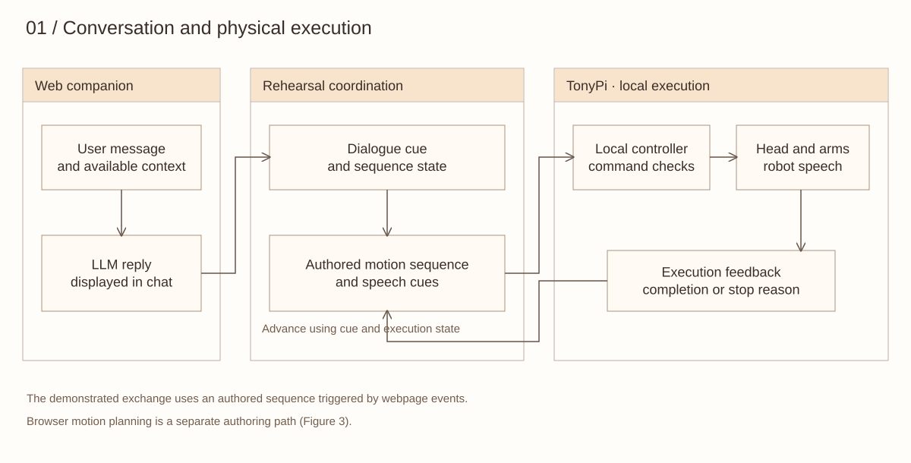
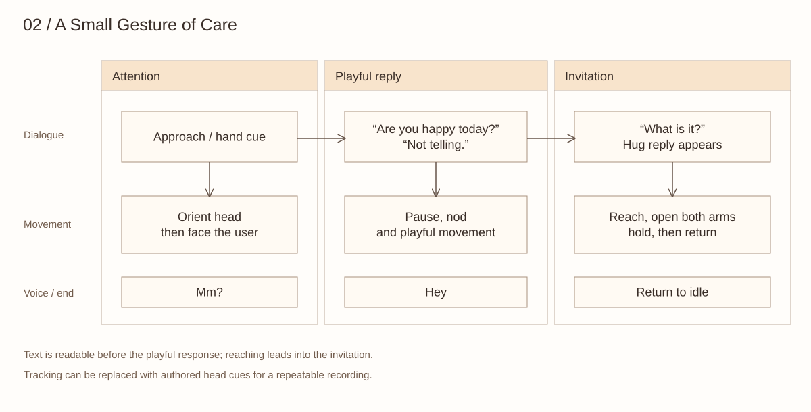
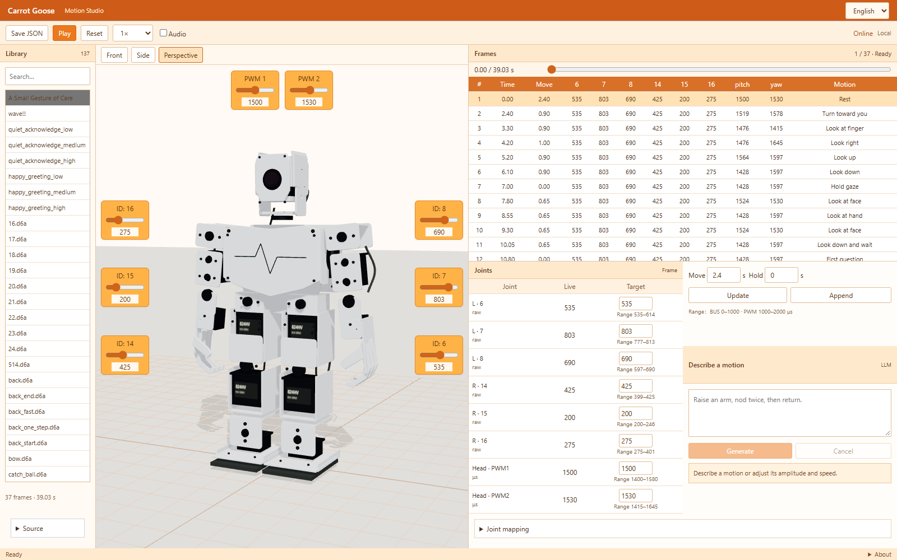
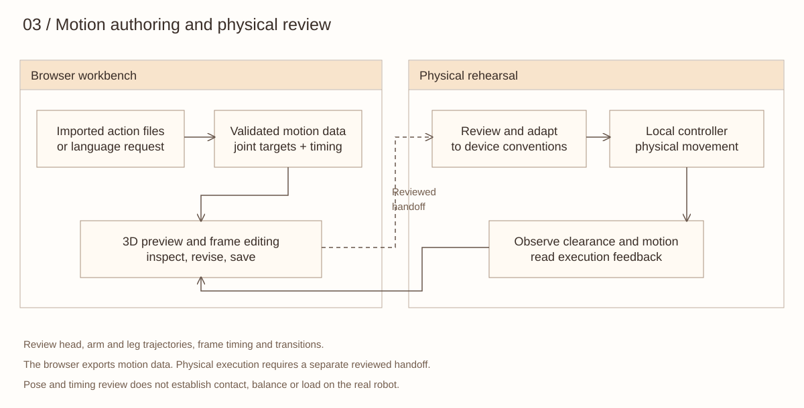
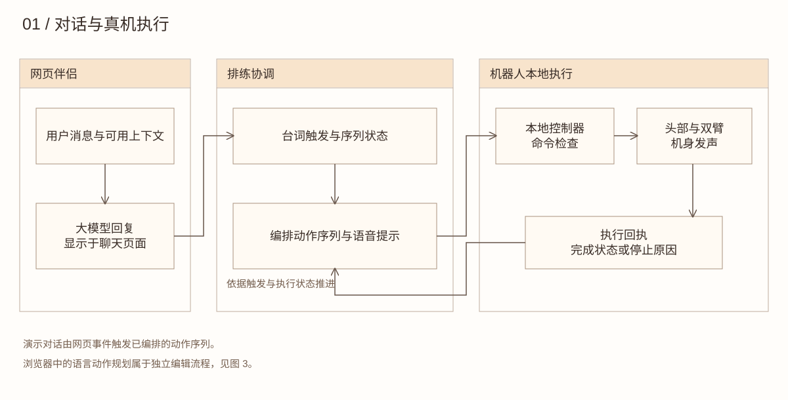
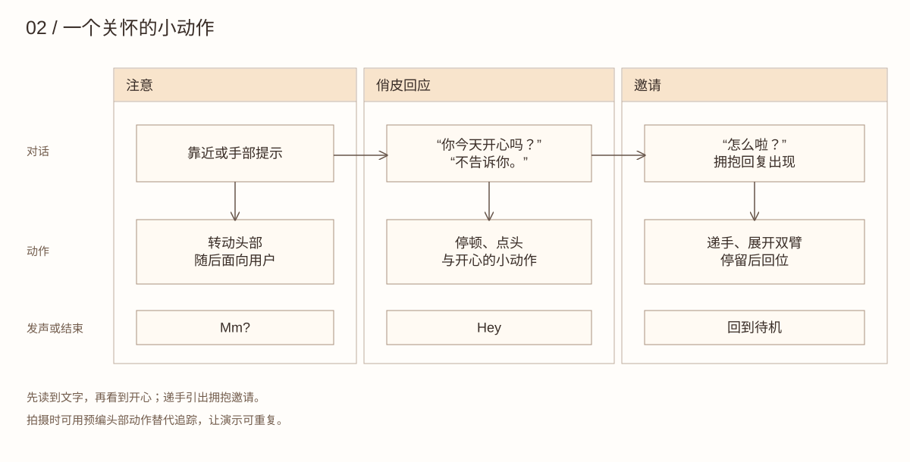
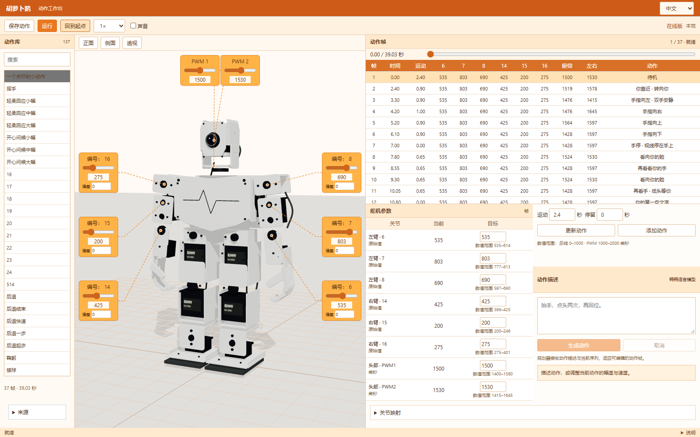
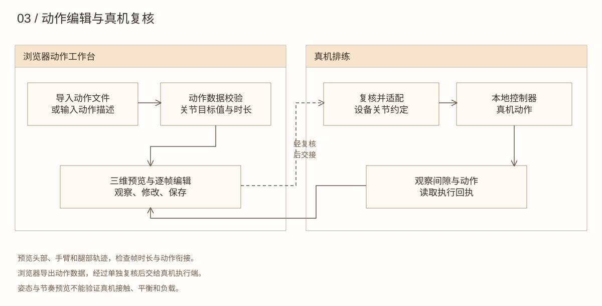

EMBODIED / CARROT GOOSE
Following, responding and moving with conversation
Carrot Goose connects a physical robot’s attention, coordinated gestures and speech to a web companion.
Carrot Goose is a physical interaction project built on TonyPi. I developed hand-following, coordinated head and arm sequences, and webpage cues that connect dialogue to the robot’s movements and voice. The demonstration brings these elements into an authored exchange. A supporting 3D workbench helps me edit poses and timing before rehearsal.
Open the motion workbench ↗ · Watch the demonstration ↗ · GitHub ↗
01 / Connecting conversation to physical action
The web companion supplies dialogue. In the rehearsal, webpage cues advance an authored sequence of attention shifts, gestures and speech. The local controller checks commands and returns execution feedback, so an interrupted movement can be distinguished from a completed one.

Figure 1. Dialogue cues, local execution and feedback.
02 / Three moments of physical expression
The demonstration moves from attention to a playful reply and an invitation to hug. A pause after “Not telling” lets the words register before the body reveals a more playful response. Reaching towards the user provides a lead-in to opening both arms.

Figure 2. The expressive sequence. These are design intentions; audience interpretation has not yet been evaluated.
Hand-following was tested separately on the robot. For a repeatable recording, the sequence can instead use authored head movements. The robot plays the short “Mm?” and “Hey” voice cues through its attached audio device.
03 / From servo editing to motion rehearsal
The virtual workbench keeps the joint values and frame-based structure of the TonyPi editor, while adding a rotatable model and a timeline. It makes a first reach, a stronger invitation and a return pose available for direct comparison.
| TonyPi servo editor | Carrot Goose workbench |
|---|
| Joint IDs on a reference image | Inspect the robot from front, side and perspective views |
| Enter joint targets for each frame | Edit targets and inspect transitions on a timeline |
| Load an action group for the robot | Import a library, preview sequences and save revisions |
| Build a sequence through controls | Describe a motion, then refine the resulting frames |
For example, “Raise an arm, nod twice, then return” can produce a new sequence. “Reduce the current amplitude to 70% and halve the speed” revises a motion for comparison. The planner reuses Carrot Duck’s model service. The request supplies the current sequence, while the system prompt supplies joint IDs, neutral values and display directions. Its output is validated before becoming editable frames.

Figure 3. The motion workbench, based on photographs of the physical robot.
04 / Preview, test, revise
I built the tool with AI-assisted coding to review poses, joint targets and transitions. Physical rehearsals then revealed issues that a visual preview cannot settle: arm-to-leg clearance, starting-pose differences and motion under load. These observations informed the next revision.

Figure 4. Motion authoring and physical review.
The hosted library contains 137 imported and authored sequences. The public repository includes an authored greeting, demonstration choreography, an action importer, motion-planning integration and Python motion, perception and control modules. The preview currently animates the arms and head; physical testing remains part of the workflow.
Further research / Does timing change the invitation?
A next study could keep the reply and hug motion unchanged, but compare raising the arm before or after the reply. Participants could describe whether the gesture felt responsive to the exchange. This proposed comparison would examine the immediate response before extending the work to recognition across repeated conversations.
具身交互 / 胡萝卜鹅
跟随、回应，与对话一起行动
胡萝卜鹅将实体机器人的注意转移、头手协调与发声连接到网页伴侣。
胡萝卜鹅是基于 TonyPi 的实体交互项目。我开发了手部跟随、头部与双臂协调的动作序列，以及让网页对话触发机器人动作与发声的连接。视频呈现了一段编排好的互动；3D 工作台则辅助编辑姿态、调整节奏与排练。
打开动作工作台 ↗ · 观看演示 ↗ · 项目仓库 ↗
01 / 从对话到身体动作
网页伴侣提供对话。排练时，网页事件推进编排好的视线、手势和发声序列。本地控制器检查命令并返回执行回执，从而区分已经完成和中途停止的动作。

图 1. 台词触发、本地执行与反馈。
02 / 身体表达的三个时刻
演示从注意转移，经过俏皮的回答，走向拥抱邀请。“不告诉你”之后留出停顿，让观众先读到文字，再看到身体透露的开心。伸手为随后展开双臂做铺垫。

图 2. 表达序列。这些是设计意图，观众如何理解仍待研究。
手部跟随曾在真机上单独测试。为方便重复拍摄，排练也可以使用编排好的头部动作。机器人通过连接的语音设备播放简短的“嗯？”和“嘿”。
03 / 从舵机编辑到动作排练
虚拟上位机保留了 TonyPi 编辑器的关节数值与逐帧结构，同时增加可旋转模型与时间轴。第一次递手、更坚定的邀请和回位姿态，可以直接播放比较。
| 原有舵机编辑器 | 胡萝卜鹅工作台 |
|---|
| 参考图片标注关节编号 | 从正面、侧面和透视观察机器人 |
| 逐帧输入关节目标值 | 编辑数值并在时间轴检查过渡 |
| 为机器人加载动作组 | 导入动作库、预览序列并保存修改 |
| 通过控件组合动作 | 用文字描述动作，再精修生成的动作帧 |
例如，“抬手，点头两次，再回位”可以生成新序列；“将当前动作幅度缩到七成，速度减半”可以生成对比版本。规划器复用鸭鸭的模型服务。请求携带当前动作序列，系统提示提供关节编号、中位值和模型运动方向；输出经过校验后成为可编辑的动作帧。

图 3. 依据实物照片细化的动作工作台。
04 / 预览、测试、修改
我通过人工智能辅助编程制作工具，用于查看姿态、关节目标值和动作衔接。真机排练进一步暴露了视觉预览无法确定的问题：手臂与腿部的间隙、起始姿态差异，以及负载下的运动表现。这些观察用于下一轮修改。

图 4. 动作编辑与真机复核。
在线工作台包含 137 段导入与编排的动作。公开仓库包含自行编排的问候动作、演示序列、动作导入器、语言规划接口，以及动作、感知和控制模块。当前预览驱动双臂与头部，真机测试仍是开发流程的一部分。
后续研究 / 时机会改变邀请的感受吗？
下一步可保持回复与拥抱动作不变，对比在回复之前或之后抬手。邀请参与者描述手势是否像是在回应这段交流。这项对比尚未开展，计划先研究即时回应，再延伸到重复对话中的被认出感。